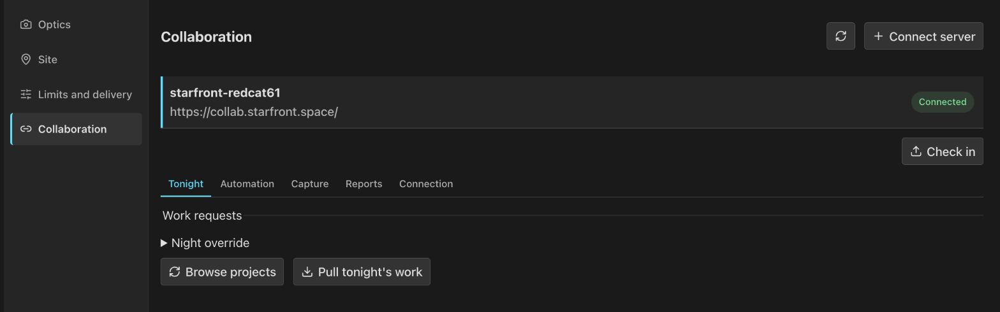
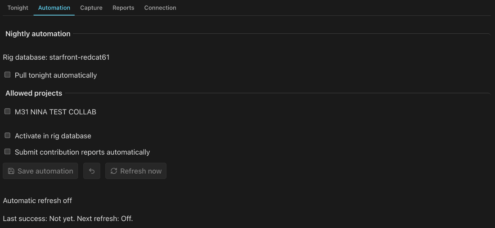

Collaboration
Join shared imaging projects on an AstroCollab server, such as Starfront. PSF Guard pulls each night's assigned work into a rig's Target Scheduler database and reports the frames that pass review.
Connect a rig
Open Settings › Rigs, choose Setup on a rig, then Collaboration. Choose Connect server. The wizard has three steps:
- Server: the server's HTTPS address and the remote name for this rig.
- Sign in: browser sign-in or a pairing code, whichever the server offers. For browser sign-in, approve on the server's page, then choose Check sign-in.
- Capture: this rig's filters, exposure lengths, binning and color mode. Finish setup saves them.
Close the wizard at any step and resume with Continue setup. Optics come from the rig's own setup. Set the rig's site first: nightly work uses it for the observing night and the Moon.

Tonight
Choose a connected server to open its tabs. On Tonight:
- Browse projects lists projects this rig can shoot. Join consents to share; it does not start anything.
- Pull tonight's work asks for the rig-local night, noon to noon, with its Moon context. Night override asks for another date.
- Review import shows each panel and filter visit. Import draft creates an ordinary inactive project draft. Apply fetches the work again and refuses a review that changed.
Then open the project's plan workspace, give the rig a template for each assigned filter at the assigned exposure, and activate. Activation uses the assignment's exact panels, angles and frame counts. Target Scheduler may finish the work on later nights; an assignment is not a deadline, and applying it again does not refill its quota.
Automation
On Automation, tick the joined projects PSF Guard may act on, then turn on what you want:
| Option | What it does |
|---|---|
| Pull tonight automatically | Pulls work once per rig-local night, and again after a restart if the night's pull has not run. Failures back off and retry. A busy database retries the saved work locally. |
| Activate in rig database | Writes safe assignments into this rig's database. A new draft takes the one template that matches its filter and binning. Ambiguous or edited recipes wait for review in Planning. |
| Submit contribution reports automatically | Checks for ready images every five minutes and sends reports from the outbox, without an open browser. |
Refresh now runs the saved automation at once. It never joins a project for you. The tab shows the last success, the next refresh, errors and held assignments. Plans you already have stay in place through outages.

Reports
A report credits the frames a rig shot for an assignment. PSF Guard sends only accepted frames with measured evidence:
- a fresh pixel plate solve, with a footprint shared across the frames;
- exposure length within 0.1% of the assigned one (10 ms to 1 s), reported as saved, not as planned;
- pixel scale, focal length, HFR, guiding RMS, bandpass, Moon illumination and separation, where the files and catalog hold them. Missing values read Unknown;
- for frames taken by the Director plugin, a matching saved-capture receipt.
On Reports, pick an imported visit, its panel and the accepted images, set Observing night to the night they were shot, and choose Review images. Queue finalized contribution freezes that review in a durable outbox, and Check in sends it. A failed batch stays queued for the next try. The tab keeps each report's delivery and the server's acceptance or rejection, with its reason. A remote rejection never changes your grades.
Share current activity
Share current activity, on Capture, is off by default. When on, fresh Director status reaches the server at most once a minute. Target names and pointing stay private, and old status never shows as current.
Credentials
The server keeps each rig's agent token in
collaboration-credentials.json beside the registry, readable only by
its owner. Tokens are plain text on disk: keep the file out of shared backups and
bug reports. Check connection tests the saved token.
Disconnect removes it here but keeps the rig's identity and queued
reports; it does not revoke the agent on the server. See
Configuration.